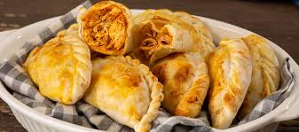

Pizza Margarita
Pizza con salsa de tomate, mozzarella y albahaca fresca.

Hamburguesa Clásica
Carne jugosa, queso cheddar y vegetales frescos en pan artesanal.

Tacos de Carne Asada
Tortillas con carne marinada, cilantro, cebolla y salsa.

Pasta Alfredo
Pasta con salsa Alfredo cremosa y pollo a la parrilla.

Empanadas de Pollo
Masa crujiente rellena de pollo sazonado y queso derretido.